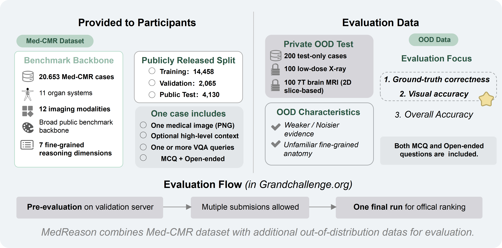

What MedReason evaluates
MedReason evaluates whether medical MLLM systems can perform clinically grounded visual question answering beyond recognition alone. Built on the Med-CMR benchmark backbone, the challenge focuses on a single VQA task spanning anatomical and pathology-oriented reasoning. It further stress-tests robustness under domain shift through low-dose X-ray and 7T brain MRI.

Clear rules at a glance
Participants solve a single medical visual question answering task with both multiple-choice and open-ended formats, spanning two clinical scenarios: image-grounded anatomical reasoning and pathology-oriented clinical reasoning.
Submissions are made as Docker containers on a self-hosted platform built in a grand-challenge.org style. Teams may submit multiple runs during pre-evaluation, but only one final run is counted for the official ranking.
Participants may use challenge data, publicly available datasets, and open-source pre-trained models. Private, proprietary, or non-publicly available datasets are not permitted, and all external resources must be documented.
Top-3 methods will be announced publicly. Awarded teams receive certificates, planned prizes, workshop recognition, and may be invited to present and contribute to the challenge overview paper.
One VQA task across two clinical scenarios
MedReason defines a single medical visual question answering task. Each case contains one medical image, optional high-level context, and one or more VQA queries. Participant systems must return either a multiple-choice answer or an open-ended answer depending on the question format.
The task spans two application scenarios. The first focuses on image-grounded anatomical reasoning, including anatomical identification, spatial relationships, and structural organization. The second focuses on pathology-oriented clinical reasoning, including abnormality inference, subtle finding differentiation, and reasoning under ambiguity.
The public benchmark backbone is provided through Med-CMR, and the dataset is available on Hugging Face.
Open the Med-CMR dataset on Hugging Face →
Code and starter resources
This section is reserved for the official baseline code, starter scripts, and submission templates. A public repository link will be added here together with environment instructions and packaging details for Docker-based submission.
Open the GitHub repository →Evaluation pipeline and official ranking
This section is reserved for the final description of the public leaderboard, private OOD test procedure, evaluation server workflow, and official ranking protocol. The final page can also include links to the submission platform and detailed scoring notes.
Participation rules and publication notes
This section is reserved for the detailed participation policy, documentation requirements for external resources, organizer-affiliated team rules, and publication / challenge overview paper policy.